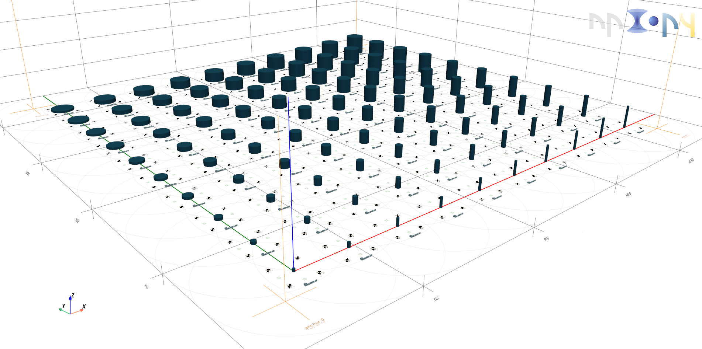

Structured Sweep of Cylinders with GDS Markers

Overview
This tutorial demonstrates creating a parameter sweep of 3D-printed cylinders with alignment markers, combining both 3D
print project and 2D GDS layout preparation in a single script. For generating the GDS-layout in Python we will make use
of the package gsdhelpers.
This script:
- Loads printing presets and resources (cylinders, marker image).
- Defines helper functions to create marker patterns and cells.
- Sets up coarse, interface, and marker aligners for nano-scale 3D printing.
- Arranges multiple scenes in a grid, each containing a cylinder structure and a textual label describing its geometric parameters.
- Integrates 2D GDS cell generation (for markers) alongside the 3D scenes.
- Exports the final configuration as a .nano file and a GDS file.
Prerequisites:
- A valid
25x_IP-n162_cylinders.tomlpreset file. - A
meshes/directory containing cylinder meshes named in a numeric sequence. - A
marker.pngimage for the marker aligner. - The
npxpy[viewport],shapely,gdshelpers, andnumpypackages installed.
You can download the full example below:
Helper Functions
Marker Pattern Creation
def create_marker_pattern(center, size):
"""
Create a simple marker pattern composed of two polygons forming a corner shape.
"""
x, y = center[0], center[1]
half_size = size / 2
# Define two adjoining square-like polygons
square1 = Polygon(
[
(x - half_size, y),
(x, y),
(x, y + half_size),
(x - half_size, y + half_size),
]
)
square2 = Polygon(
[
(x, y - half_size),
(x + half_size, y - half_size),
(x + half_size, y),
(x, y),
]
)
return MultiPolygon([square1, square2])
GDS Marker Cell Creation
def create_marker_cell(name, positions):
"""
Create a GDS cell containing marker patterns at specified positions.
"""
cell = Cell(name)
marker_size = 13 # Fixed marker size in micrometers
for pos in positions:
pattern = create_marker_pattern((pos[0], pos[1]), marker_size)
cell.add_to_layer(1, pattern)
return cell
Implementation Steps
Step 1: Loading Presets and Resources
Load a preset file which defines printing parameters.
Load a series of cylinder meshes from the meshes/ directory. The filenames are expected to follow a pattern like
cylinder_0.stl, cylinder_1.stl, ... .
preset = npxpy.Preset.load_single(file_path="25x_IP-n162_cylinders.toml")
# Sorting by the numeric suffix ensures a known order of cylinders.
cylinder_meshes = [
npxpy.Mesh(file_path=f"meshes/{mesh}", name=f"{mesh}")
for mesh in sorted(
os.listdir("meshes"), key=lambda x: int(x.split(".")[0].split("_")[-1])
)
]
# Load a marker image for fine alignment tasks later on.
marker = npxpy.Image(file_path="marker.png", name="marker_image")
Step 2: Initializing the Project
Initialize the project with chosen objective, resin, and substrate parameters.
project = npxpy.Project(objective="25x", resin="IP-n162", substrate="FuSi")
# Load presets and resources (marker image and cylinder meshes) into the project.
project.load_presets(preset)
project.load_resources(marker)
project.load_resources(cylinder_meshes)
Step 3: GDS Cell Initialization for Markers
In addition to the 3D printing scenes, we will also create a GDS cell that represents a top-down view of marker patterns. This can be used to generate 2D layouts.
gds_cell = Cell("sweep_scene_array")
Step 4: Setting Up the Coarse Aligner
The coarse aligner defines a rough reference frame using four anchor points placed at known sample coordinates.
coarse_aligner_labels = ["anchor 0", "anchor 1", "anchor 2", "anchor 3"]
coarse_aligner_positions = [
[-100.0, -100.0, 0.0],
[1900.0, -100.0, 0.0],
[1900.0, 1900.0, 0.0],
[-100.0, 1900.0, 0.0],
]
# Initialize the coarse aligner with a tolerance (residual_threshold) defining
# how precisely anchors must align.
coarse_aligner = npxpy.CoarseAligner(residual_threshold=5)
coarse_aligner.set_coarse_anchors_at(
labels=coarse_aligner_labels, positions=coarse_aligner_positions
)
project.add_child(coarse_aligner)
Step 5: Adding a Frame Pattern for Each Anchor in GDS
We create a larger frame pattern around each coarse anchor to visualize their positions in GDS. This provides a 2D reference map of the entire scene array.
frame_marker_size = 25
for pos, label in zip(coarse_aligner_positions, coarse_aligner_labels):
# Create a frame pattern bigger than the marker patterns used inside scenes.
frame_pattern = create_marker_pattern(pos, frame_marker_size)
# Create a dedicated cell for this frame pattern and label it.
gds_cell_frame_pattern = Cell(label)
gds_cell_frame_pattern.add_to_layer(1, frame_pattern)
# Add a text label indicating the anchor’s name below the pattern.
# The text is shifted slightly downward (e.g., 25 µm) from the anchor position.
gds_cell_frame_pattern.add_to_layer(
1,
Text(
origin=tuple(np.array(pos[:-1]) - np.array([0, 25])),
height=5,
text=label,
alignment="center-center",
),
)
# Add the frame-pattern cell to the main GDS cell.
gds_cell.add_cell(gds_cell_frame_pattern)
Step 6: Interface Alignment
The interface aligner refines alignment at the substrate interface level. Four interface markers define a plane onto which printing occurs.
interface_aligner_labels = ["marker 0", "marker 1", "marker 2", "marker 3"]
interface_aligner_positions = [
[0.0, 50.0],
[50.0, 0.0],
[-50.0, 0.0],
[0.0, -50.0],
]
interface_aligner = npxpy.InterfaceAligner(name="Interface Aligner")
interface_aligner.set_interface_anchors_at(
labels=interface_aligner_labels, positions=interface_aligner_positions
)
Step 7: Marker Alignment
The marker aligner uses an image and marker positions to achieve fine alignment accuracy. Each marker is placed at a known coordinate with a given orientation. Here we define a cluster of four markers forming a square.
marker_aligner_labels = ["marker 0", "marker 1", "marker 2", "marker 3"]
marker_aligner_orientations = [0.0, 0.0, 0.0, 0.0]
marker_aligner_positions = [
[-50.0, -50.0, 0.0],
[-50.0, 50.0, 0.0],
[50.0, 50.0, 0.0],
[50.0, -50.0, 0.0],
]
marker_aligner = npxpy.MarkerAligner(
name="Marker Aligner", image=marker, marker_size=[13, 13]
)
marker_aligner.set_markers_at(
labels=marker_aligner_labels,
orientations=marker_aligner_orientations,
positions=marker_aligner_positions,
)
Step 8: Creating a Base Scene
Create a base scene to which we attach the interface and marker aligners. We will replicate this scene multiple times, placing cylinders and labels at various positions to form a parameter sweep.
sweep_scene = npxpy.Scene(name="scene_0", writing_direction_upward=True)
sweep_scene.append_node(interface_aligner)
sweep_scene.append_node(marker_aligner)
Step 9: Generating a Grid of Scenes
We want a 10x10 grid of scenes, each displaced in x and y by 200 µm. Each scene will have a unique cylinder and text label.
count_x = 10
pitch_x = 200
count_y = 10
pitch_y = 200
# Generate a list of positions for each scene in a grid layout.
sweep_scenes_positions = [
[x, y, 0]
for y in range(0, count_y * pitch_y, pitch_y)
for x in range(0, count_x * pitch_x, pitch_x)
]
# Define text labels corresponding to cylinder radius (r) and height (h).
# r varies from 5 to 50 in steps of 5, and h varies from 10 to 100 in steps of 10.
# This creates 100 unique labels for 100 cylinders.
text_labels = [
f"r={r}\nh={h}"
for r in range(5, 55, 5)
for h in range(10, 110, 10)
]
# Create a separate scene instance (deepcopy) for each grid position.
sweep_scenes_list = [
sweep_scene.deepcopy_node().position_at(position=pos, rotation=[0, 0, 0])
for pos in sweep_scenes_positions
]
Step 10: Adding Cylinders and Labels to Each Scene
For each cylinder and scene, we attach: - The cylinder structure (with preset parameters). - A text label describing the radius/height and file name. - Update the GDS layout with corresponding marker patterns for reference.
for cylinder, scene_instance, text in zip(
cylinder_meshes, sweep_scenes_list, text_labels
):
# Create the cylinder structure node using the loaded preset.
cylinder_structure = npxpy.Structure(
name=cylinder.name, preset=preset, mesh=cylinder
)
scene_instance.append_node(cylinder_structure)
# Create a text label node showing the cylinder parameters and mesh name.
# Position it slightly below the cylinder (shifted by -75 µm in y) so they don't overlap.
text_label = npxpy.Text(
position=cylinder_structure.position,
text=f"{text}\n{cylinder_structure.name}",
preset=preset,
)
text_label.translate([0, -75, 0])
# Find the marker aligner node within the current scene to ensure text and cylinder
# share the same alignment reference.
marker_aligner_in_scene = scene_instance.grab_all_nodes_bfs(
"marker_alignment"
)[0]
marker_aligner_in_scene.add_child(text_label)
# Add the fully populated scene (with cylinder and text) to the coarse aligner
# so that it’s integrated into the global coordinate system.
coarse_aligner.add_child(scene_instance)
# Additionally, create a GDS marker cell for each scene corresponding to the
# marker positions. This gives a top-down 2D reference for the array layout.
gds_marker_cell = create_marker_cell(
cylinder_structure.name, marker_aligner_positions
)
gds_cell.add_cell(
gds_marker_cell, origin=tuple(scene_instance.position[:-1])
)
Step 11: Exporting the Project
Export the entire project configuration to a NANO-file and save the GDS-design
project.nano(project_name="cylinder_params_sweep")
gds_cell.save("cylinder_params_sweep.gds")
Step 12 (optional): Check Project in Viewport
project.viewport()
End of Example
In this script, we demonstrated how to:
- Load presets, meshes, and marker images for use in a nano-scale 3D printing project.
- Set up coarse, interface, and marker aligners to establish a precise coordinate system.
- Create a grid of scenes containing parameter-swept cylinders and text labels.
- Incorporate GDS cell generation to represent marker patterns in a 2D layout.
- Export the final configuration to a NANO-file for printing and a GDS-file for reference.
Consider experimenting with:
- Different pitches, counts, and parameter ranges for your structures.
- Alternative marker positions, orientations, and amounts.
- Additional preset files or combining multiple structure types in the array with different presets.